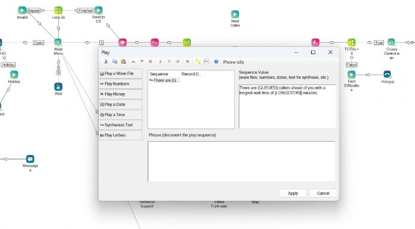
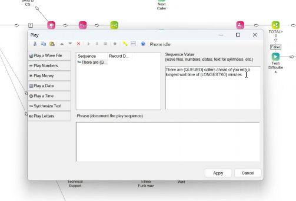

RG26 / Contact center configuration
RG26 / Contact center configuration
RingCentral call workflows
Visual call scripting connects prompts, branching paths, and contact center configuration.
- Organization
- RG26 Technologies
- Focus
- Contact center workflows
- Shown here
- Visual call-script configuration
The problem
A contact center needs consistent caller prompts and routing paths supported by the correct operational configuration.
The approach
Visual scripts organize call-handling actions. RingCentral administrative views in the source provide the associated skill and user configuration context.
Workflow details
- Configure Play actions with sequences and spoken system text.
- Connect branches, waiting steps, and connection actions in the script editor.
- Review skill details, skill lists, and user assignments in the administration interface.
Intended value
Reusable call logic is intended to make prompts and routing easier to maintain consistently.
Call-script configuration
Select a screenshot to enlarge it.
{kind=link}

Enlarge screenshot{kind=link}

Enlarge screenshotProject scope & source
Configuration evidence. Live calls, end-to-end routing, fallback behavior, and changes in handling time are not demonstrated.
Source: RG and BritePH Project Case Studies Revised. Project-specific delivery dates and individual responsibilities are not specified in the source.
Planning a similar project?
Discuss a project